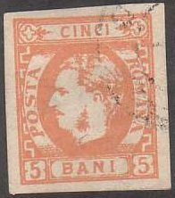
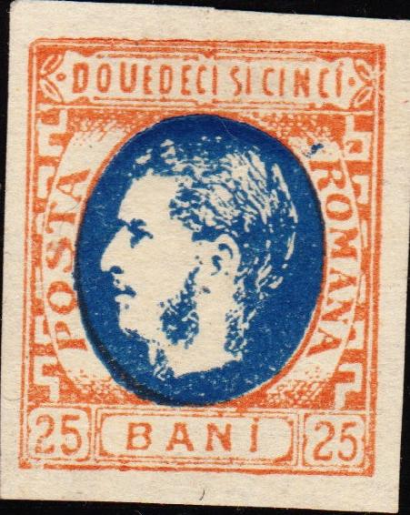
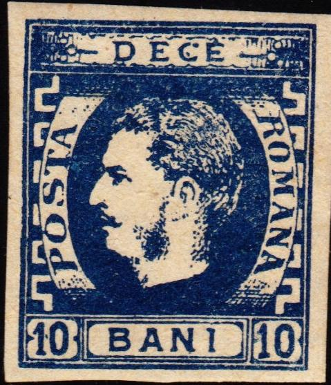
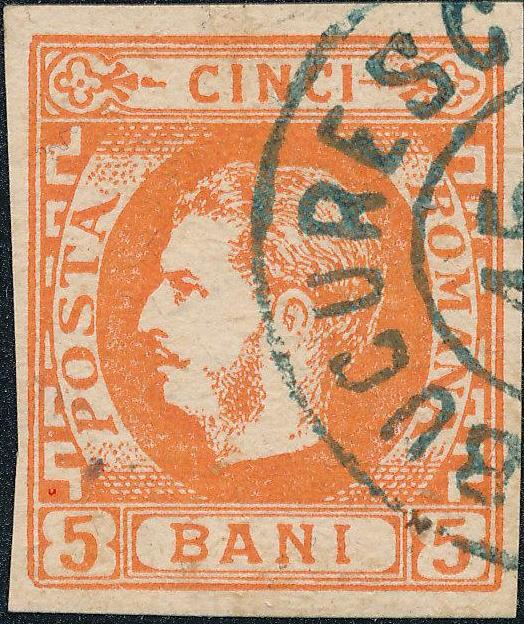
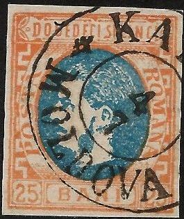

Return To Catalogue - Rumania 1869 issue (king with whiskers), types - Rumania - Cancels on stamps of Rumania
Note: on my website many of the
pictures can not be seen! They are of course present in the
catalogue;
contact me if you want to purchase it.
For stamps of Rumania, issued earlier, click here.
5 b orange 10 b blue 15 b red 25 b orange and blue 50 b blue and red
Value of the stamps |
|||
vc = very common c = common * = not so common ** = uncommon |
*** = very uncommon R = rare RR = very rare RRR = extremely rare |
||
| Value | Unused | Used | Remarks |
| 5 b | RR | RR | |
| 10 b | R | R | First printing was in blue, the second printing in indigo. |
| 15 b | RR | R | |
| 25 b | RR | R | |
| 50 b | RR | R | |
There are four cliches of the all values, except for the 10 b where there are eight (4 for the blue and 4 for the indigo color, but those types appear to be very similar; at least I am not able to distinguish them....). Click here for Rumania 1869 issue (king with whiskers), types

25 b stamp with a very strange cancel.
Forgeries, examples:
These Fournier forgeries are quite deceptive:



In the 5 b Fournier forgery, the second "C" of "CINCI" is thinner at the top. In his 10 b forgery, the "I" of "BANI" has a stroke on the top that is too long; also there is a blotch of blue ink between the beard and the mouth which is not found in the original stamps. Note that the "A" of "POSTA" in the 15 b Fournier forgery is different (shorter foot stroke); also the two small parts of a circle are missing in the upper inscription below and above the word "PRE". In the 25 b genuine stamp, there should be roofs on top of the "M" of "ROMANA". In the 50 b the foot of the "R" should be quite short, in the Fournier forgeries it is very wide, the chin of the King is also different; also note the lower part of the "S" of "POSTA" is too small.

Some of the above Fournier forged cancels were used on the above
forgeries (barely discernable)
I've seen the 10 and 15 b Fournier forgeries with the "JASSY 10 8 FRANCA" cancel as shown above.
Fournier album with forgeries of this and the following issue.


(Dangerous forgery, the "C" of "DECI" is
slanting and the "5" in the lower right corner has a
flaw at the top)


Very similar 50 b forgery to the ones shown above. Next to it two
25 b forgeries. All of them have a "GALATI 7/12"
cancel, except for the last one which is uncancelled.


The hair of the King is too 'greasy' and the eyes are very long
in the above forgeries of the 10 b and 25 b values. It more looks
like a portrait of Stalin.... In the 5 b forgery, the upper label
is wrong. These might be Oneglia forgeries. They often have the
cancel "GALATI 4 ...".
In the above forgery of the 15 b the face of the king looks as if it is slanting backwards (compared to a genuine stamp). This is the forgery described in Album Weeds. The chin is too pronounced and the forehead receding. There is also no part of two small circles above and below the word "PRE". The "A" of "POSTA" is placed too low when compared to the ornamental border left to it. Also, this word is placed too far to the left. Next to it a 5 bani forgery and a forgery of the 1866 issue probably made by the same forger. The first stamp has a typical 'VF' cancel that can be found on forgeries of many other countries (are these Spiro products?).

This appears to be a Spiro forgery as well (judging from the
bottom cance), enhanced with a more convincing cancel.


The "A" of "POSTA" is placed too low when
compared to the ornamental border left to it in this forgery.
This word is placed too far to the left. It is probably made by
the same forger as the above 15 B forgeries.
Here some more of these forgeries, including the 5 bani and 25
bani (reduced size). All with bogus cancels.



The bottom part of the "B" of "BANI" is much
larger than the top part.


I've seen several of these forgeries with a "TG JIU
9/10" (Targu Jiu?) cancel.


Two forgeries of the 15 bani value; note the damaged bottom left
corner.

Forgeries of the 5 bani value. The lower left corner is damaged.

Two forgeries with the forged cancel "BOTUSCHANI 28/9
MOLDOVA".

Forgery with damaged ornament to the left of "CINCI"

Forgery of the 25 b

Other forgery with almost blank ornament in front of
"CINCI". This might be the 'Belgian forgery' mentioned
in the Serrane guide.
Other forgeries:
(Reduced sizes)

A forgery of the 25 b with the "U" of
"DOUEDECI" too tall. The "I" of
"BANI" is too tall.

A pair of two 50 bani forgeries.

This forgery has written "FALS" at the back, I have no
further information.
The Serrane guide describes a deceptive Brussels forgery with cancel "ROMAN 20 SEP.".
A forgery of the 50 b exists, with the top ornaments similar to the 5 b stamp. More information (with pictures) on this forgery can be found at: http://home.no.net/bhb1/ro-f01e.htm.

1871 issue: Very similar design, but with beard
For issues of Rumania of 1871 click here.


{kind=link}
{kind=link}
{kind=link}
{kind=link}
{kind=link}